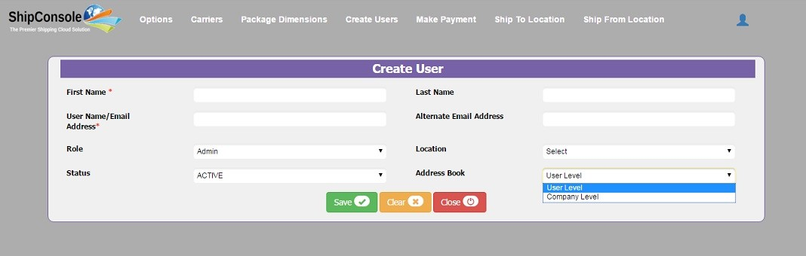

After Client Admin creates the Ship From Location, he has to create users who work from a particular Ship From Location. There are three types of users that a Client Admin can create. They are:
1. Admin: Admin is Client Admin. One client Admin can create another Client Admin.
2. Shipping User: The user who does the Shipping in a particular Organization.
3. Tracking: Tracking User is the one who is responsible for Auditing, Tracking and Generating Reports in the Ship From Location which are created by Client Admin.
 Figure 3.1
Figure 3.1
a. Create New User:
Click on “Create” button to create new user. Then create user page is opened as shown in Figure3.2 Provide the details and click on “Save” button to create the user. Click on “Clear” to delete all the values and “Close” button to go to the User Details page. Below one is the create user page.

Figure 3.2
Client Admin has to provide following details:
1. First Name: First name of the user.
2. Last Name: Last name of the user(optional)
3. User Name/Email Address: Provide a valid email address.
4. Alternate Email Address: Provide a valid email address.
5. Role: Responsibility of the user i.e. Admin/Shipping User/Tracking User.
6. Location: The Ship From Location from which the user operates.
7. Status: Active Users only able to login and work.
8. Address Book : In Create User Page there are two types of Address Book that a Client Admin can create are described below:
User Level : If User Level is selected for a particular user, then when the respective user is logged into the shipping page , the ship to location created/imported by the respective user will be shown in LOV.
Customer Level : If Customer Level is selected, then when the respective user is logged into the shipping page , the ship to location created/imported by the respective user will be shown in LOV.

Figure 3.3
After filling all the details click on save button, a message will be displayed at top right corner showing successful creation of user as shown in Figure3.4
On clicking “Close” button user details screen will be displayed which contains newly created user details as shown in Figure 3.5

Figure 3.4

Figure 3.5
b. Update User:
Client Admin can update/change the existing Users by clicking on edit image as shown below

Figure 3.6
On clicking the edit image, update user page is opened as shown in Figure 3.7

Figure 3.7
In Update User page Client Admin can change any one of the fields or all the fields, i.e. he can change Role of the User or Location etc of that user and click on “Save” button to update the values. If the values are saved successfully, a message will be displayed at top right corner. Or click on “Close” button to go to the User Details Screen as shown in below figure

Figure 3.8
Above screen shows the updated Username and Role of the user. Successful update message displayed at top center of the page. Clicking on “Close” button redirects to the User Details page with updated values as shown below.

Figure 3.9